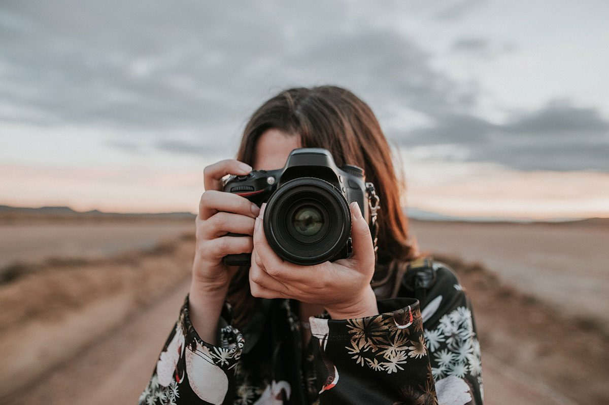

Academic Project
The following is a detailed, step-by-step, process of creating short videos from a chosen source video, using computational photography techniques.
In this video project, I have chosen a 10-seconds black and white video from pexel.com, and I applied four different photography processes to its video frames. The result is two separate videos. The first video showcases colorizing and style transfer techniques while the second video displays colorizing, kuwahara filter and inpainting.
Colorizing
To colorize the extracted frames, I am using an open source code project called DeOldify. With a deep learning based model, they combine the following approaches:
Self-Attention Generative Adversarial Network: Setting the model to have the spectral normalization and self-attention (except for the pretrained U-Net generator) in order to compute a representation of the same sequence in image description generation task.
Two Time-Scale Update Rule: Trained with stochastic gradient descent, the main premise is that the discriminator converges to a local minimum when the generator is fixed. In DeOldify project a higher critic learning rate is set to incorporate a threshold critic loss that makes sure the critic is caught up before moving on to generator training. This approach is applied in their "NoGAN" method which is to get the benefits of GAN training while spending limited time on actually doing direct GAN training.
Generator Loss with two parts: First part is a basic Perceptual or Feature Loss based on VGG16 to bias the generator model to replicate the input image. The second is the loss score from the critic. It is designed in such way that GANs learn the loss function from something that was previously hand coded in order to provide us with more accurate results.
Style Transfer
Following the TensorFlow Hub collection of trained models, I use deep learning to compose my image frames in the style of a random image. In this algorithm, intermediate layers of the model get the content and style representations of the image where it can be described by the means and correlations across the different feature maps. A Gram matrix that includes this information is calculated by taking the outer product of the feature vector with itself at each location, and averaging that outer product over all locations.
With this style and content extractor, we can then implement the style transfer algorithm by calculating the mean square error for output image of each target, then take the weighted sum of these losses.
Kuwahara Filter
I am using this non-linear smoothing filter in my image processing to display adaptive noise reduction and edge preservation. Normally, in a grey scale image, the output of Kuwahara filter φ(x, y) for any pixel (x, y) is given by φ(x, y) = m_i(x, y) where i = arg min_j σ_j (x, y). However, since I have colored image frames, each image needs to first get converted into another color space. The modified filter then operates on only the brightness channel. The variance of the brightness of each quadrant determines from which final filtered color should it be taken from. The filter will produce an output for each channel which will correspond to the mean of that channel from the quadrant that had the lowest standard deviation in brightness. This ensures that only one region will determine the RGB values of the central pixel.
Inpainting
The algorithm I use for this technique is based on the paper "An Image Inpainting Technique Based on the Fast Marching Method" by Alexandru Telea in 2004. It is based on Fast Marching Method: Algorithm starts from the boundary of the region to be inpainted and goes inside the region gradually filling everything in the boundary first. The pixel on the neighbourhood to be inpainted is replaced by normalized weighted sum of all the known pixels in that neighbourhood. Once that pixel is inpainted, it moves to next nearest pixel using Fast Marching Method. FMM ensures those pixels near the known pixels are inpainted first. This algorithm is enabled by using the flag, cv.INPAINT_TELEA.
To start, I extract video frames with an online website, ezgif.com. My original 10.6 seconds video would then give me 106 images.
First Video
With the Colab notebook (ImageColorizerColab.ipynb) provided by DeOldify, I begin colorizing my images. As instructions follow, I upload my images to my self-made website (through GitHub) to use the URL specific for each image to add to the code. The render_factor is assigned to 35 by default. After adjusting the initial settings I run the code and download the output images directly from the notebook once running is complete.
Now that my colored images are ready, I apply style transfer as the next step. I create a new Jupyter notebook and import libraries Matplotlib, Numpy, TensorFlow, TensorFlow Hub, and PIL into the program. Next, I define two functions: load_image and visual Images. Inside load_image I decode the image into three different channels, crop the center of the image and resize the image to match the size of the content and style images. For the second function, I visualize the plots in grid order. Then I pick two images, and import them into the program. I use the load_image function to import the images. After loading the images into the program, I train my neural network model with my chosen style image using avg-pool method. Then define and load the TensorFlow hub model, Arbitrary Image Stylization, that I downloaded and loaded from my local computer. Finally, I visualize the result and download them to my local space. My implementation for this part has been inspired by a tutorial from Behic Guven in Medium.
Second Video
Moving on to the second video, in addition to applying colorization similar to the first video, I implement Kuwahara filter and inpainting respectively. For Kuwahara, I import the pykuwahara library to the Jupyter Notebook as the first step. Next, I create the filter using kuwahara() function with gaussian method, radius 4 and sigma 1.5 as the initial setup. I apply this filter to the image I read from my Google Drive folder. At the end, I save the output images for the next and final technique, inpainting. For inpainting, I am using numpy and cv2 libraries. With a few lines of code I inpainted images using inpaint() function and cv2.INPAINT_TELEA flag and finally save the result to my local environment.
I am using iMovie (a video editing software on MacBook) to merge all the final images and make my two videos. Among all the techniques I used, style transfer was relatively more time consuming to work with (about 2.5 hours in total). Inpainting had some imperfections in the results as my experiment shows it works quite poorly with larger regions of target (in area). It is possibly due to the use of fast Marching Method that emphasises on the pixels near the target neighbourhood rather than those relatively away from it. Therefore, this technique is not recommended for thicker regions of inpaint with complex background themes. The coding language I used for the entire project is Python and the online IDE is Google Colab.
The short clip above shows the original video followed by the two videos I have created based on the aforementioned explanation.